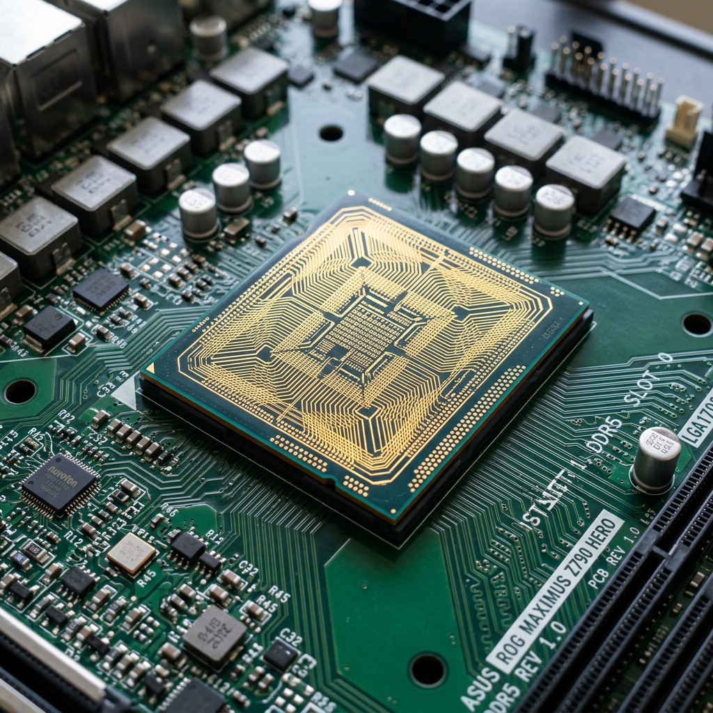

This page provides an overview of important concepts that help explain how computers function. These concepts form the foundation of computer science and are essential for understanding how data is processed, stored, and used in modern technology.

Figure: Internal computer components including the processor and circuitry
The binary system is a number system that uses only two digits: 0 and 1. Computers rely on binary because electronic circuits can easily represent two states: on and off. These states are translated into binary values, allowing computers to process and store all types of data, including text, images, and programs.
Binary is essential because it simplifies how data is handled by hardware. Every action performed by a computer is based on binary operations.
Boolean logic is a system of reasoning that uses true and false values. It is used in computing to make decisions and control the flow of programs. Boolean operations include AND, OR, and NOT.
For example, an AND operation only returns true if both conditions are true. This type of logic is used in programming, circuits, and decision-making processes within computers.
The CPU is the main component responsible for executing instructions. It acts as the brain of the computer and performs calculations, processes data, and manages tasks.
The CPU follows a cycle called the fetch-decode-execute cycle. It retrieves instructions from memory, interprets them, and carries out the required actions. This process happens extremely quickly, allowing computers to perform complex operations in seconds.
Memory refers to the storage components that hold data and instructions. There are different types of memory, including RAM (Random Access Memory), which stores temporary data, and long-term storage devices like hard drives.
Memory allows the CPU to access data quickly, improving performance and efficiency. Without memory, a computer would not be able to store or retrieve information.
An algorithm is a step-by-step set of instructions used to solve a problem or complete a task. Algorithms are used in programming to define how a program operates.
For example, a simple algorithm might describe how to sort numbers or calculate a result. Efficient algorithms are important because they improve performance and reduce processing time.
Data is the information that computers process and store. It can include numbers, text, images, and more. Data is represented in binary form and manipulated through various operations.
Understanding data is important because it is the foundation of all computing processes. Computers take input data, process it, and produce output results.
These concepts are important because they explain how computers function at a fundamental level. By understanding binary, logic, processing, and data, we can better understand how software and hardware interact to perform tasks.
This knowledge is essential for anyone studying Information Technology, as it provides the foundation for more advanced topics such as programming, networking, and cybersecurity.